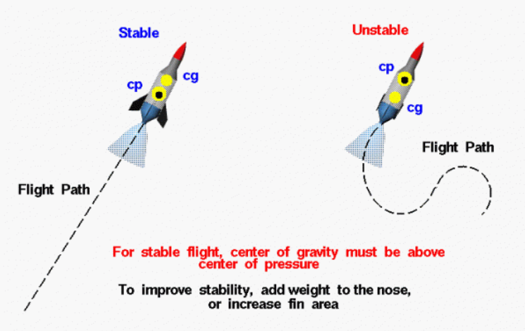
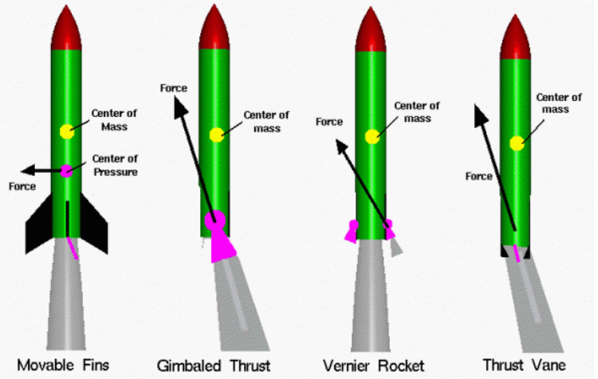

Rocket Fundamentals
Rockets are fascinating engineering marvels that operate on the principles of physics, propulsion, and aerodynamics. Understanding the fundamentals of rocketry helps us explore space, launch satellites, and even design model rockets.
Forces on a Rocket
Forces are vector quantities having both a magnitude and a direction. When describing the action of forces, one must account for both the magnitude and the direction. In flight, a rocket is subjected to four forces; weight, thrust, and the aerodynamic forces, lift and drag.
The magnitude of the weight depends on the mass of all of the parts of the rocket. The weight force is always directed towards the center of the earth and acts through the center of gravity, the yellow dot on the figure.
The magnitude of the thrust depends on the mass flow rate through the engine and the velocity and pressure at the exit of the nozzle.
The thrust force normally acts along the longitudinal axis of the rocket and therefore acts through the center of gravity. Some full scale rockets can move, or gimbal, their nozzles to produce a force which is not aligned with the center of gravity. The resulting torque about the center of gravity can be used to maneuver the rocket.
The magnitude of the aerodynamic forces depends on the shape, size, and velocity of the rocket and on properties of the atmosphere. The aerodynamic forces act through the center of pressure, the black and yellow dot on the figure. Aerodynamic forces are very important for model rockets but may not be as important for full scale rockets, depending on the mission of the rocket.
-
Lift
Stabilizes rocket flight.
-
Weight
Pulls rocket downward.
-
Drag
Resists rocket motion.
-
Thrust
Pushes rocket upward.

Basic Rocket Motion
Dimensions
We live in a world that is defined by three spatial dimensions and one time dimension. Objects move within this domain in two ways. An object translates, or changes location, from one point to another. And an object rotates, or changes its attitude. In general, the motion of any object involves both translation and rotation. The translations are in direct response to external forces. The rotations are in direct response to external torques or moments (twisting forces).
Rotation and Translation of Rockets
The motion of a rocket is particularly complex because the rotations and translations are coupled together; a rotation affects the magnitude and direction of the forces which affect translations. To understand and describe the motion of a rocket, we usually try to break down the complex problem into a series of easier problems. We can, for instance, assume that the rocket translates from one point to another as if all the mass of the rocket were collected into a single point called the center of gravity. We can describe the motion of the center of gravity by using Newton’s laws of motion. In general, there are four forces acting on the rocket; the weight, thrust, drag and lift.
ROCKET ROTATIONS
Controlling the Attitude
Since we live in a three-dimensional world, it is necessary to control the attitude or orientation of a flying rocket in all three dimensions. In flight, any rocket will rotate about its center of gravity, a point which is the average location of the mass of the rocket. We can define a three-dimensional coordinate system through the center of gravity with each axis of this coordinate system perpendicular to the other two axes. We can then define the orientation, or attitude of the rocket by the amount of rotation of the parts of the rocket along these principal axes.
Axis
Most rockets are symmetric about a line from the tip of the nose to the center of the nozzle exit. We will call this line the roll axis and motion about this axis is called a rolling motion. Because the rocket is symmetric about the roll axis, engineers call this configuration axisymmetric. The center of gravity lies along the roll axis.
Maneuvering a Rocket
A rocket can be maneuvered in several different ways. In flight, the fins of the rocket produce aerodynamic forces. These forces are applied at the center of pressure of the rocket which is some distance from the rocket cg and produce torques (or moments) about the principal axes. The torques cause the rocket to rotate. Most full-scale rockets produce pitch or yaw motions by gimballing, or rotating, the exhaust nozzle. If the thrust vector is not aligned with the roll axis, it produces a torque about the center of gravity.
A rocket's motion is influenced by two fundamental types of rotational movements, which are as follows:
-
Rocket Roll Motion
A roll motion is a circular movement of the fins of the rocket. The rolling motion can be caused by the deflection of the fins of the rocket. The fins can be hinged like the rear section of an airplane wing.
View -
Pitch Motion
A pitch motion is an up or down movement of the nose of the rocket. The pitching motion is being caused by the deflection of the nozzle of the rocket. Such a rotation of the nozzle is called gimballing the nozzle.
View
{kind=link}
{kind=link}
Recent Space Missions
Stay updated with the latest space missions from top space agencies worldwide. From 2020 onward, explore the groundbreaking launches that are pushing the boundaries of space exploration and innovation.
| Space Agency | 2020 | 2021 | 2022 | 2023 | 2024 | 2025 |
|---|---|---|---|---|---|---|
NASA |
Artemis I |
|
|
|
|
|

SpaceX |
Crew Dragon Demo-2 |
|
|
|
|
|
Roscosmos |
Soyuz MS-16 |
|
|
|
|
|
ESA |
Solar Orbiter |
|
|
|
|
|
ISRO |
PSLV-C51 |
|
|
|
|
|
CNSA |
Tianwen-1 |
|
|
|
|
|
Rocket Stability
During the flight of a model rocket, small gusts of wind or thrust instabilities can cause the rocket to “wobble” or change its attitude in flight. Like any object in flight, a model rocket rotates about its center of gravity (CG), shown as a yellow dot in the figure. The rotation causes the axis of the rocket to be inclined at some angle (α) to the flight path. Whenever the rocket is inclined to the flight path, a lift force is generated by the rocket body and fins, while the aerodynamic drag remains fairly constant for small inclinations. Lift and drag both act through the center of pressure (CP) of the rocket, shown as the black and yellow dot in the figure.
-
Restoring Force
If the center of gravity is located above the center of pressure, the rocket will return to its initial flight conditions if it is disturbed. Engineers call this a restoring force because the forces “restore” the vehicle to its initial condition and the rocket is said to be stable.
-

De-Stabilizing Force
If the center of pressure is above the center of gravity, the lift and drag forces maintain their directions but the direction of the torque generated by the forces is reversed. This is called a de-stabilizing force.
For a stable model rocket, the center of pressure must be located below the center of gravity.
Rocket Control
There are four major components to any full scale rocket; structural system or frame, the payload system, the guidance system, and the propulsion system. The guidance system of a rocket includes very sophisticated sensors, on-board computers, radars, and communication equipment.
-
Movable Fins
Movable fins help stabilize and control the rocket’s flight by adjusting their angle in response to changes in airflow. When the rocket experiences disturbances, these fins generate corrective forces that push it back onto the intended trajectory. This method is highly effective in atmospheric flight, where aerodynamic forces play a crucial role in maintaining stability and direction.
-
Gimbaled Thrust
Gimbaled thrust involves mounting the rocket engine on a pivot, allowing the nozzle to swivel and change the direction of the exhaust. By adjusting the angle of thrust, the rocket can steer itself without relying on external aerodynamic surfaces. This technique is widely used in modern rockets for enhanced maneuverability, making it an essential feature in spaceflight and atmospheric launch control.
-
Vernier Rocket
Vernier rockets are small auxiliary thrusters that provide precise control over the rocket’s orientation and trajectory. These engines fire in short bursts to make fine adjustments, particularly when major propulsion systems are inactive. They are commonly used in spacecraft and upper rocket stages to ensure accurate positioning, making them essential for orbital corrections and docking maneuvers.
-
Thrust Vane
Thrust vanes are control surfaces placed inside the rocket’s exhaust stream to redirect the flow of hot gases, generating forces that steer the vehicle. This method is particularly useful during early launch stages when aerodynamic surfaces like fins are less effective. Thrust vanes allow for precise control without requiring complex moving parts, making them a reliable option for stabilizing rockets in the initial phases of flight.